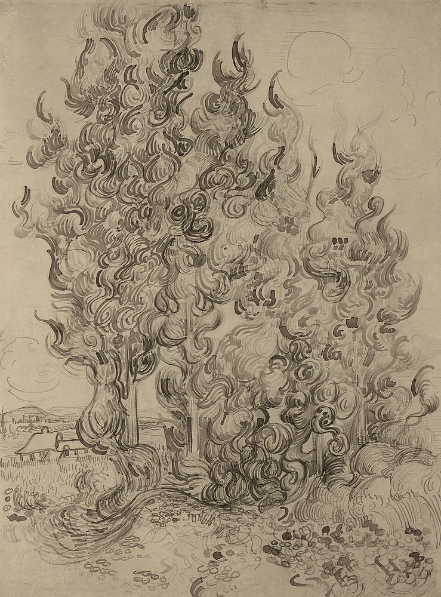
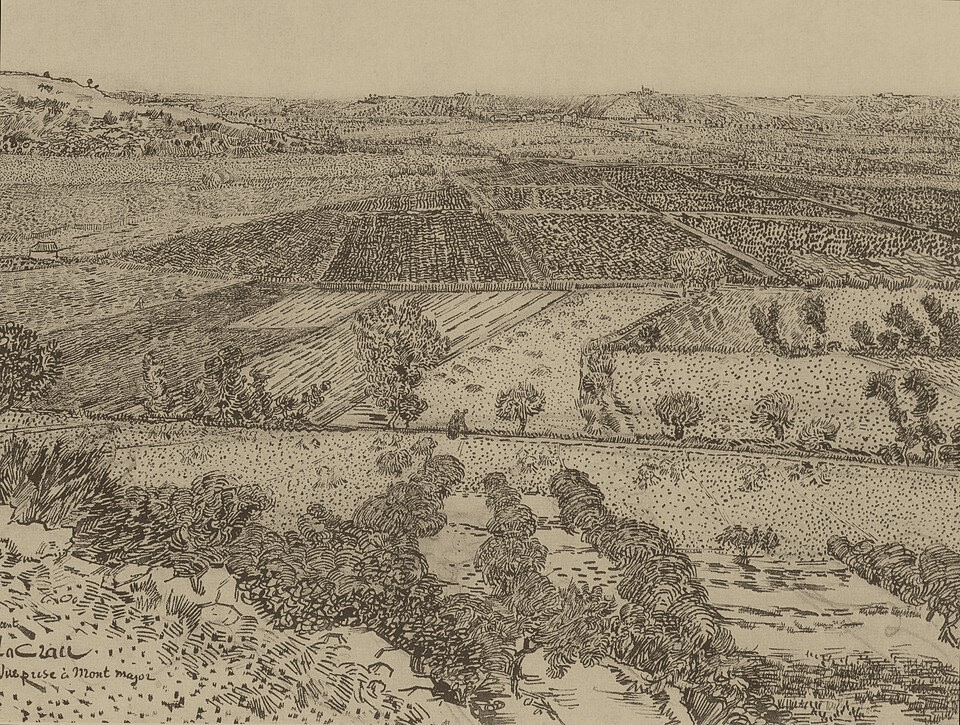
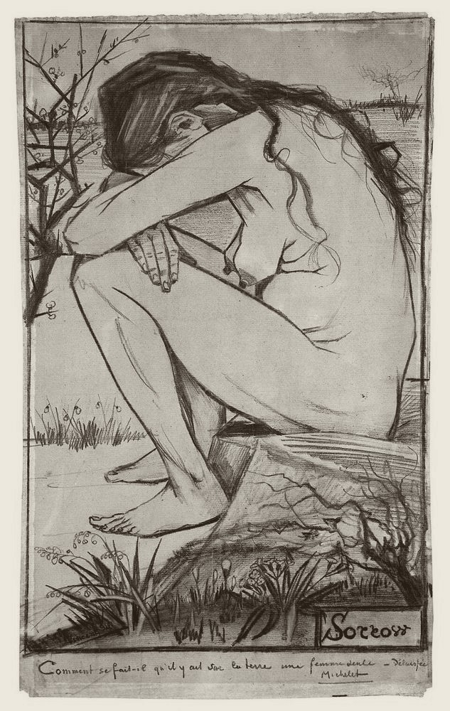
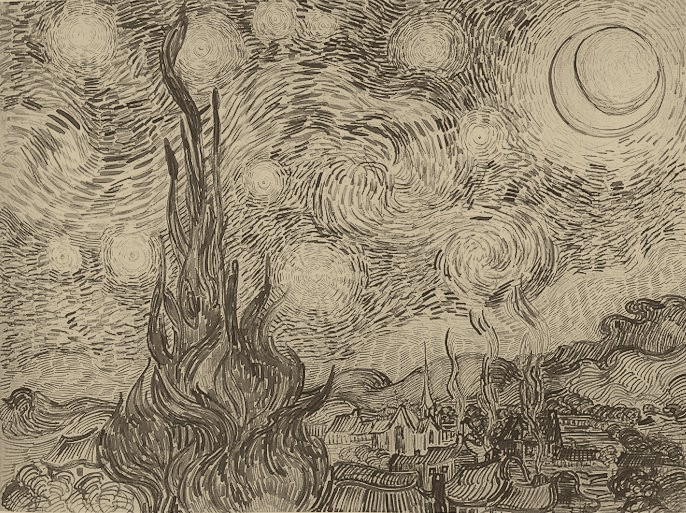
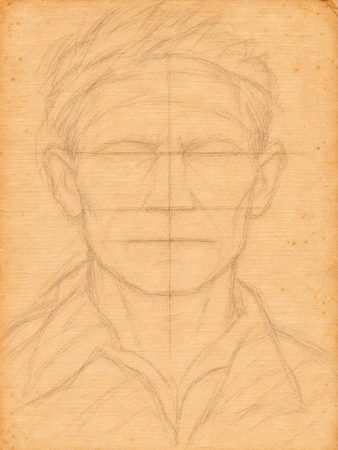
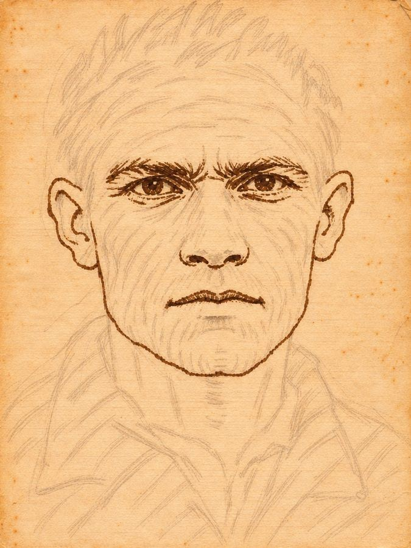
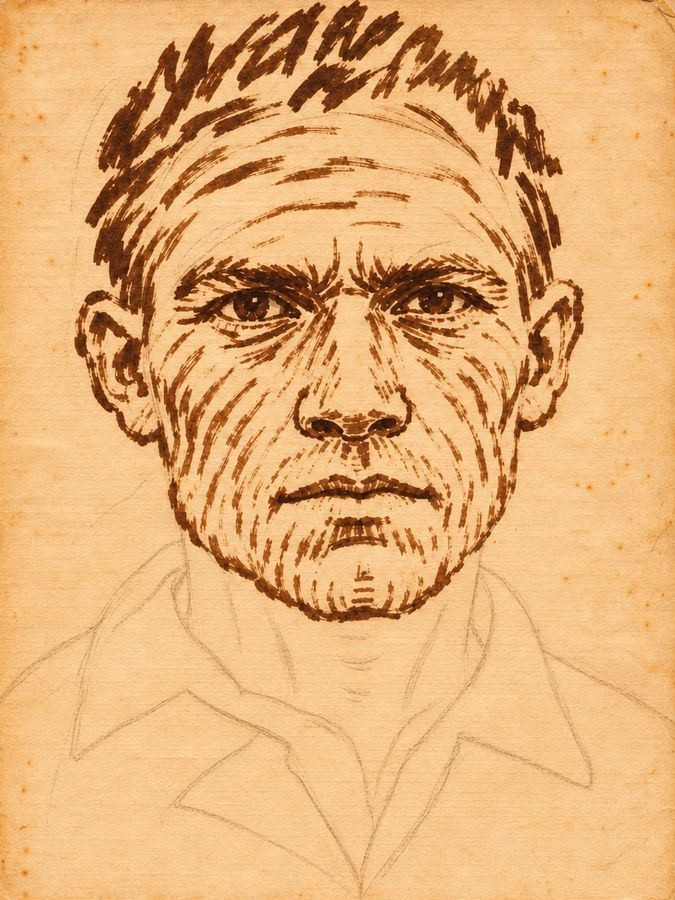
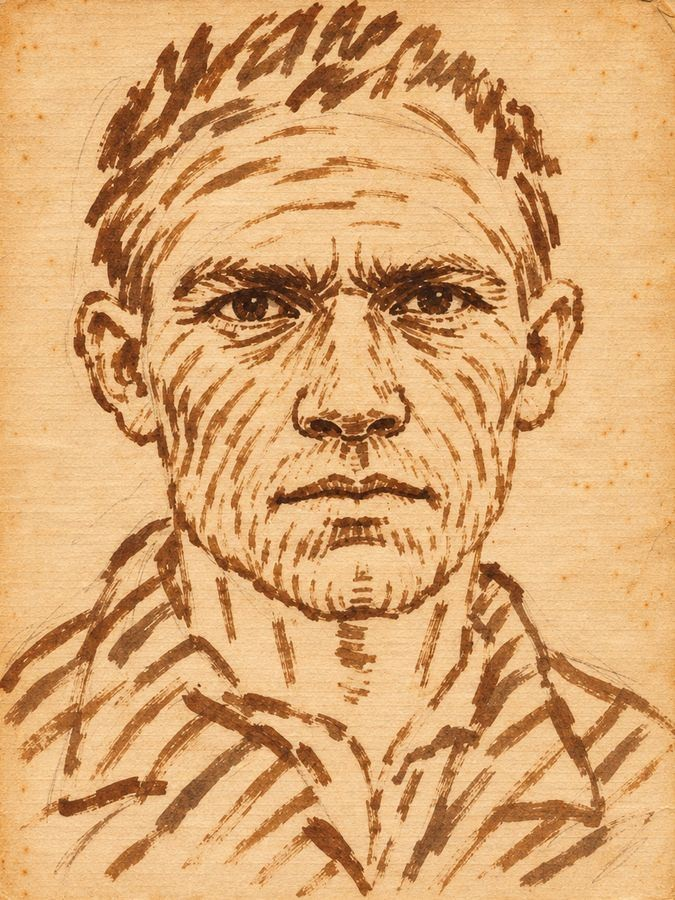

Poucos artistas atravessaram o tempo como Vincent van Gogh. Ele vendeu pouquíssimo em vida, morreu aos 37 anos sem ter visto o próprio nome reconhecido e hoje está entre os pintores mais vistos e mais estudados do mundo.
O que mais me interessa nele, porém, está nas folhas de papel. Van Gogh fez mais de mil desenhos, e foi desenhando que ele inventou a sua linguagem: pontos, tracinhos, vírgulas e redemoinhos, cada um com uma função e com uma direção que acompanha a forma.
Isso faz dele um professor generoso. Quem está começando consegue entrar no universo dele por uma única marca repetida com atenção. Quem já desenha bem encontra nas mesmas folhas um refinamento que leva anos para dominar.
O livro trata só do desenho: do lápis, do carvão e da pena. A pintura dele fica para outra ocasião.
Pedro Torres
Entre a decisão de ser artista, em 1880, e a morte, em 1890, passaram-se dez anos. Ele fez nesse tempo cerca de 850 pinturas e mais de mil desenhos. Esta parte acompanha esses dez anos pelo que mudou no traço.

Cada cidade onde ele morou deixou alguma coisa no desenho dele, e você vai reencontrar essas coisas nos capítulos seguintes.
A escola do preto e branco. Lápis de carpinteiro, giz litográfico, grafite fixado com leite e a moldura de perspectiva levada às dunas.
Tecelões e camponeses. Lendo Delacroix, passa a começar a forma pelos centros, pelas massas, e não pela linha.
As gravuras japonesas: cada superfície ganha um padrão gráfico próprio. É a semente do alfabeto de marcas.
A pena de junco. O traço curto de Arles se alonga em curvas que ligam terra, árvore e céu.


Haia foi a escola do preto e branco.
No fim de 1881 mudou-se para Haia e teve algumas aulas com Anton Mauve, pintor importante da Escola de Haia e parente da família por casamento. A relação durou pouco. Vincent passou a viver com Sien Hoornik, uma mulher grávida e com uma filha, que posou para muitos desenhos, entre eles Sorrow.
Ele colecionava gravuras de revistas inglesas como The Graphic, experimentava o lápis de carpinteiro e o giz litográfico e fixava o grafite com leite para tirar o brilho (cartas 217 e 297). Mandou fazer a moldura de perspectiva que levava às dunas (cartas 253 e 254) e desenhava os velhos do asilo, que chamava de homens órfãos.

Os tracinhos do céu seguem correntes em volta dos astros, e cada estrela tem a sua coroa. A vila fica parada em traços retos. O cipreste é a única massa densa da folha, ligando o chão ao céu.
| Lugar e data | Saint-Rémy, junho de 1889 |
| Técnica | Pena e tinta |
| Medidas | 47 × 62,5 cm |
| Catálogo | F1540 · JH1732 |
| Acervo | Museu Estatal de Arquitetura Shchusev, Moscou |
Cinco zonas: cabelo, testa, bochechas, pescoço, casaco. O fundo fica vazio.
Antes de preencher, marque de leve a cruz do rosto e a linha dos olhos. Depois trabalhe zona por zona, sempre na direção do mapa: arcos na testa, anéis em volta dos olhos, chama no cabelo.
cobrindo os olhos, a cabeça ainda tem volume.




Nos retratos a pena de Arles, Vincent aplicou ao rosto o mesmo alfabeto da paisagem.
O rosto é tratado como um terreno: tem planos, e os traços correm sobre ele como curvas de nível num mapa. Cada parte tem a sua corrente, e é a mudança de direção entre uma parte e outra que dá o volume.
Os olhos são o centro de dois redemoinhos. Os tracinhos giram em anéis em volta da órbita e se espalham pela maçã do rosto. A pálpebra de cima é a linha mais grossa do rosto.